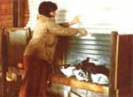
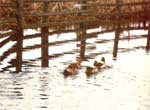
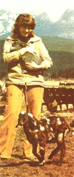

Free Livestock For Your Farm
November/December 1979
Diane Downs describes about the easiest possible way to get some critters on your homestead.


PHOTOS BY STAN DOWNS
Then Candy and Bill Reis moved to a farm complete with lots of empty outbuildings-they couldn't wait to "stock" their land with all kinds of critters . . . but the cost of buying an assortment of barnyard beasts proved to be beyond their means.
However, Candy wasn't about to give up ... instead, she simply ran a $1.00 ad in the local paper that said, "WANTED: Your unwanted ducks, chickens, rabbits ... or any other farm animals you no longer need."
The response was overwhelming! Although Candy's initial intention was to get a number of large laying hens, that was about all she didn't get during the several weeks her ad was run! Instead, her request brought over 70 chickens (from banties and eight-year-old layers to roosters), 11 rabbits (some were certified prizewinners), eight ducks, one goose, one dog, two cats, four young male goats, and an eight-year-old milking doe who had miscarried (but had possibly been rebred to a registered buck).
KNOW WHEN TO SAY "NO"
If you want to try the Reises' approach to livestock acquisition, be sure to pay attention to the following pointers (which -Candy says-are bits of wisdom she had to learn the hard way).
First, if someone offers you animals that you have no desire to care for or consume (as folks undoubtedly will) ... know how to say no! Also-while you're polishing your diplomacy- consider in advance a tactful (as well as honest) answer when someone asks for reassurance that "you're not going to butcher them, are you? " (More than a few people will get misty at the thought of their "babies" winding up on someone's dinner table.)
Second, know how to care for the animals you choose to accept (it's best to do your research on raising small livestock ... because, as Candy points out, "It's not likely that anyone will offer you a cow, horse, or pig"), and be sure to glean any and all available information from the offered beasts' previous owners.
Then, too, if you have no buildings that can be used for animal shelter-and if your climate or predator conditions require that you provide cover for your "adoptees" -you'll have to decide whether you can actually afford your "free" livestock! You must also be sure to have your facilities ready before you bring the orphans home. (Nothing sours a person's relationship with his or her animal faster than, for instance, to have the newly acquired goats eat all of a neighbor's prize tulips before a fence Is erected.)
Finally, be prepared-financially-to feed the livestock you intend to keep. Good, nutritionally balanced foods are essential to the maintenance of healthy, productive beasts.., which are the only kind of critters anyone should keep!
ALL'S WELL
Candy's freezer is now full ... and there is livestock-both furred and feathered-galore on the Reis farm. The ducks are nesting around the large pond, the doe is due to kid, the banties provide enough eggs for the family (with some left over to sell), and the rabbits ... well, they're doing what bunnies do best. In fact, if you happened to show up at Candy's door, you might well be met with the words: "Say, can you use some rabbits?"
|
 |
 |
 |